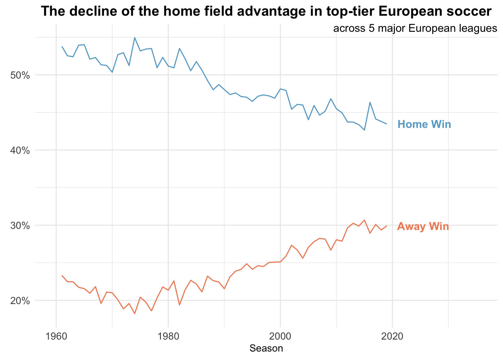
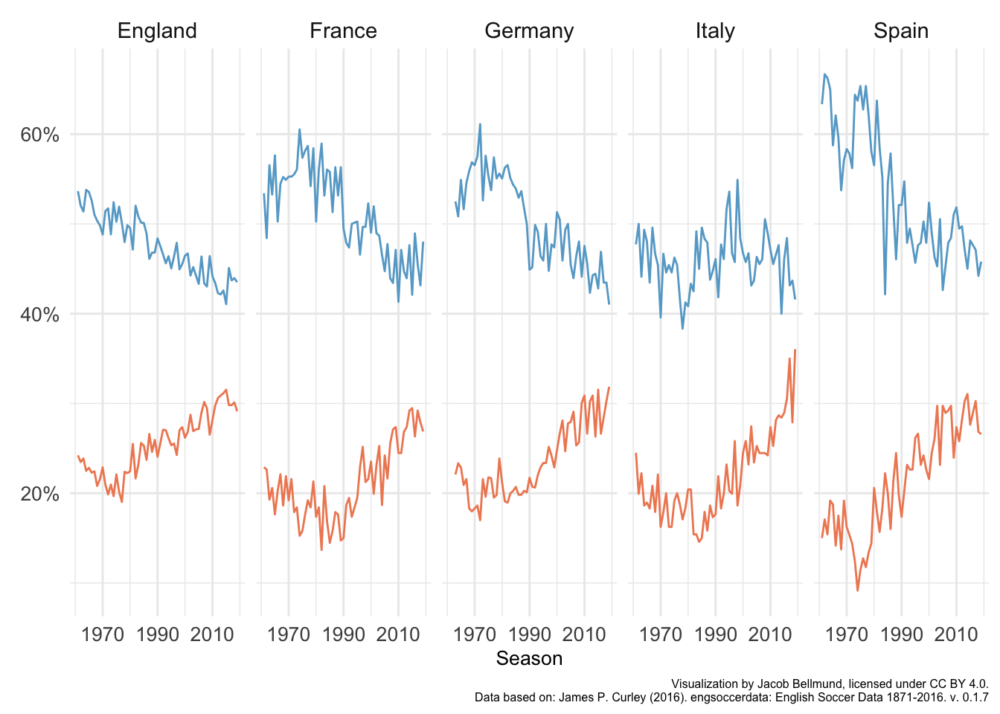
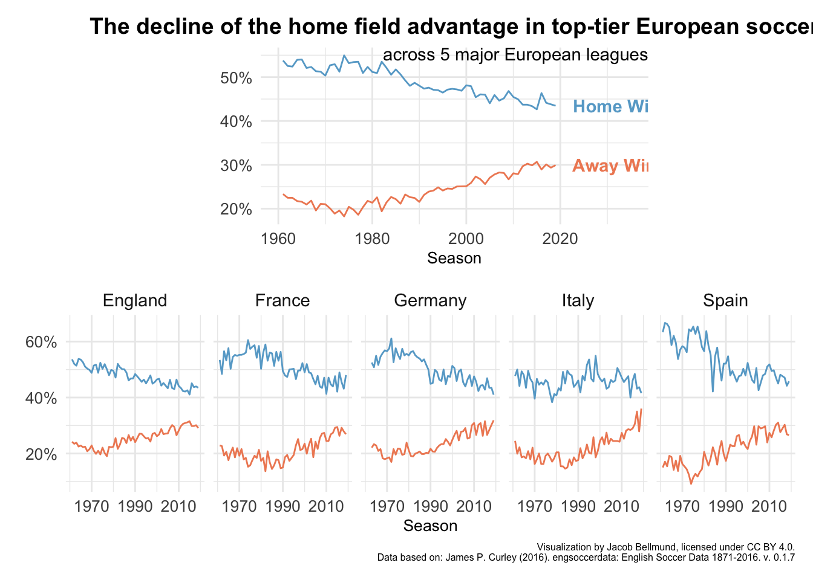

2 Week 1
The instructions for Week 1 of 2022 are short: >This was really just a bring your own dataset week.
2.1 Data
Let’s look at some football (soccer) data from main European leagues. I use the data as distributed in the engsoccerdata package.
First load the package after installing it if needed.
if(!require("tidyverse")){install.packages("tidyverse")}## Loading required package: tidyverse## ── Attaching packages ────────────────────────────────────────────────────────────────────────────── tidyverse 1.3.1 ──## ✓ ggplot2 3.3.5 ✓ purrr 0.3.4
## ✓ tibble 3.1.6 ✓ dplyr 1.0.7
## ✓ tidyr 1.1.4 ✓ stringr 1.4.0
## ✓ readr 2.1.1 ✓ forcats 0.5.1## ── Conflicts ───────────────────────────────────────────────────────────────────────────────── tidyverse_conflicts() ──
## x dplyr::filter() masks stats::filter()
## x dplyr::lag() masks stats::lag()library(tidyverse)
if(!require("devtools")){install.packages("devtools")}## Loading required package: devtools## Loading required package: usethislibrary(devtools)
if(!require("engsoccerdata")){install_github("jalapic/engsoccerdata")}## Loading required package: engsoccerdatalibrary(engsoccerdata)
if(!require("patchwork")){install.packages("patchwork")}
library(patchwork)Load data from England, France, Germany, Italy and Spain.
# load data
df_eng <- engsoccerdata::england
df_fra <- engsoccerdata::france
df_ger <- engsoccerdata::germany
df_ita <- engsoccerdata::italy
df_esp <- engsoccerdata::spain2.2 Data wrangling
We want to add all data to one data frame. Some columns are missing, so let’s quickly compute them.
# Germany is missing the columns for total goals, goal difference and result
# Let's create these
df_ger <- df_ger %>%
mutate(totgoal = hgoal + vgoal,
goaldif = hgoal + vgoal,
result = case_when(hgoal > vgoal ~ "H",
vgoal > hgoal ~ "A",
hgoal == vgoal ~ "D"),
country = "Germany")
df_ita <- df_ita %>%
mutate(division = 1,
totgoal = hgoal + vgoal,
goaldif = hgoal + vgoal,
result = case_when(hgoal > vgoal ~ "H",
vgoal > hgoal ~ "A",
hgoal == vgoal ~ "D"),
country = "Italy")
df_esp <- df_esp %>%
filter(round == "league") %>%
select(-round, -group, -notes, -HT) %>%
mutate(division = 1,
totgoal = hgoal + vgoal,
goaldif = hgoal + vgoal,
result = case_when(hgoal > vgoal ~ "H",
vgoal > hgoal ~ "A",
hgoal == vgoal ~ "D"),
country = "Spain")
df_eng <- df_eng %>%
mutate(country = "England")
df_fra <- df_fra %>%
mutate(country = "France",
result = case_when(hgoal > vgoal ~ "H",
vgoal > hgoal ~ "A",
hgoal == vgoal ~ "D")
)
# build common data frame
df <- rbind(df_eng, df_ger, df_esp, df_ita, df_fra)2.3 Home field advantage
2.3.1 All leagues
First, let’s compute the proportions of home wins, away wins and draws irrespective of country (i.e. league).
# result proportions by country
df_win <- df %>%
group_by(Season) %>%
summarise(home_win = sum(result == "H")/n(),
away_win = sum(result == "A")/n(),
draw = sum(result == "D")/n(),
.groups = "drop") %>%
pivot_longer(cols = c(home_win, away_win, draw), names_to = "result")
# df for labelling
df_label = df_win %>%
filter(Season == max(Season)) %>%
mutate(label = case_when(result == "home_win"~"Home Win",
result == "away_win"~"Away Win",
result == "draw"~"Draw")
)Visualize percentages of home vs. away wins over time as a line graph.
# plot as line graph
p1 <- ggplot(df_win %>% filter(Season > 1960, result != "draw"),
aes(x = Season,
y = value,
group = result,
color = result)) +
geom_line() +
geom_text(data = df_label %>% filter(result != "draw"),
aes(x = Season, y = value, label = label),
hjust = -0.2, alpha = 1, fontface = "bold") +
xlim(c(1960, 2035)) +
scale_color_manual(values = c("#ef8a62", "#67a9cf")) +
scale_y_continuous(labels = scales::percent_format(accuracy = 1)) +
ylab(element_blank()) +
ggtitle("The decline of the home field advantage in top-tier European soccer") +
annotate(geom = "text", label = "across 5 major European leagues",
x=Inf, y=Inf, hjust = 1, vjust = 1,
size = 11/.pt, face = "bold") +
theme_minimal() +
theme(legend.position = "none",
text = element_text(size=10),
plot.title = element_text(size = 14, face = "bold", hjust = 0.5),
axis.text = element_text(size=10))## Warning: Ignoring unknown parameters: facep1
2.3.2 Leagues separately
Second, we repeat the above steps, but separately for each country.
# result proportions by country
df_win_country <- df %>%
group_by(country, Season) %>%
summarise(home_win = sum(result == "H")/n(),
away_win = sum(result == "A")/n(),
draw = sum(result == "D")/n(),
.groups = "drop") %>%
pivot_longer(cols = c(home_win, away_win, draw), names_to = "result")
# df for labelling
df_label = df_win_country %>%
group_by(country) %>%
filter(Season == max(Season)) %>%
mutate(label = case_when(result == "home_win"~"Home Win",
result == "away_win"~"Away Win",
result == "draw"~"Draw")
)Make a line plot with one facet per country
# plot as line graph with one facet per country
p2 <- ggplot(df_win_country %>% filter(Season > 1960, result != "draw"),
aes(x = Season,
y = value,
group = result,
color = result)) +
geom_line() +
#geom_text(data = df_label %>% filter(result != "draw"),
# aes(x = Season, y = value, label = label),
# hjust = -0.2, alpha = 1, fontface = "bold") +
#xlim(c(1960, 2026)) +
scale_color_manual(values = c("#ef8a62", "#67a9cf")) +
scale_x_continuous(breaks = seq(1970, 2010, 20),
minor_breaks = seq(1960, 2020, 20)) +
scale_y_continuous(labels = scales::percent_format(accuracy = 1)) +
ylab(element_blank()) +
facet_wrap(~country, nrow = 1) +
labs(caption = "Visualization by Jacob Bellmund, licensed under CC BY 4.0.\nData based on: James P. Curley (2016). engsoccerdata: English Soccer Data 1871-2016. v. 0.1.7")+
theme_minimal() +
theme(legend.position = "none",
text = element_text(size=10),
axis.text = element_text(size=10),
strip.text = element_text(size = 11),
plot.caption = element_text(size=6))
p2
2.3.3 Visualization
dsgn <- "
ABBBC
DDDDD
"
p <- plot_spacer() + p1 + plot_spacer() + p2 +
plot_layout(design = dsgn, guides = "keep")
p
ggsave(filename = here("figures", "bellmund_tidytuesday_2022_wk1.png"), plot = p,
width = 10, height = 6)Here is the final visualization with the correct aspect ratio: